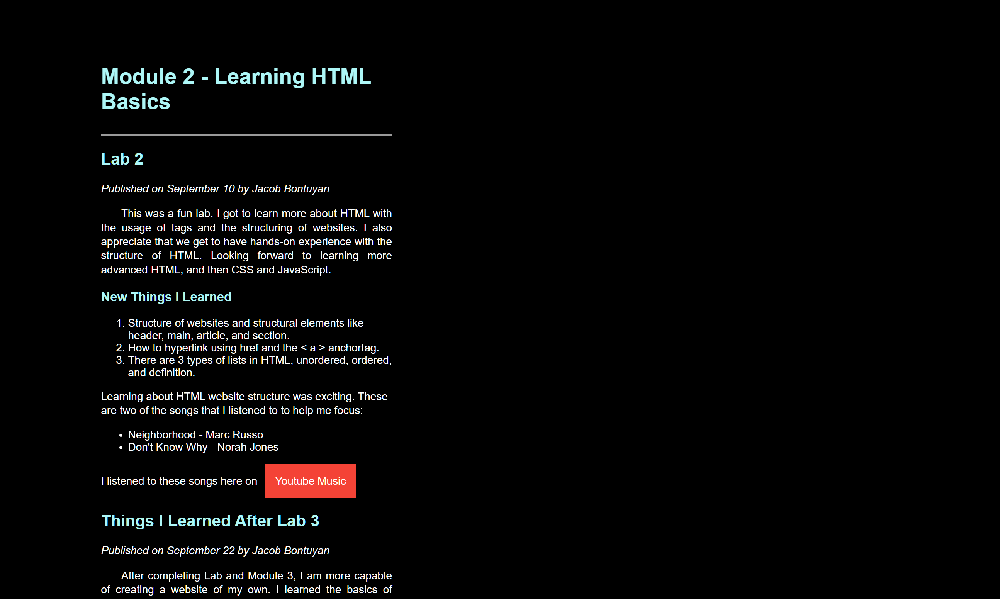
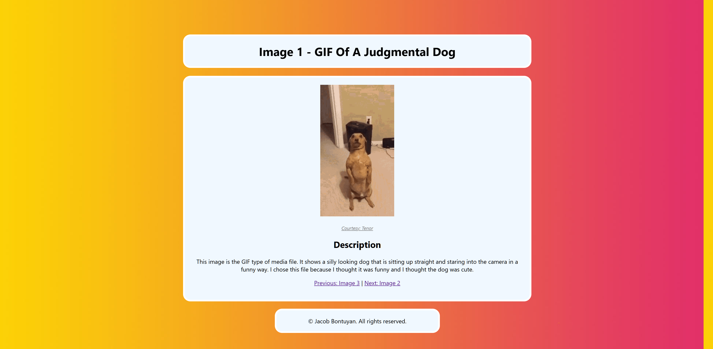
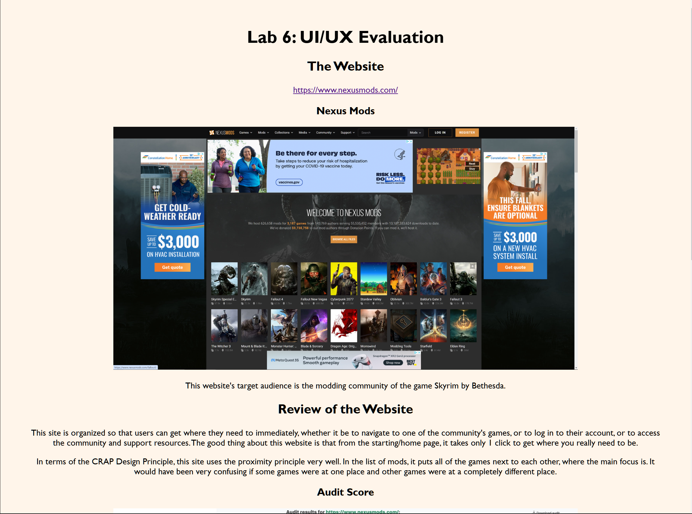

Page 2 - The Skills
In this class, I acquired the skills and knowledge needed to create a basic website using HTML, CSS, and JavaScript. However, I realize now that the world of web development is vast, and I have barely touched the surface.
Below shows the languages I have learned in this class, and my confidence level in that language, the extent of what I am able to do in terms of what the language offers, in my opinion.
- HTML - 65%
- CSS - 48%
- JavaScript - 12%
- XML - 43%
Showcase
Lab 03
This is the first website I created using both HTML and CSS. I made the rookie mistake of using margin instead of padding on the page to re-align the text.

Lab 04
This is the first website I created using a background image and linking to connecting pages. It is also the first website I created with images, as shown in the lack of styling. And still, I was editing the margin of the whole page in order to re-align the text.

Lab 06
At this point in the class, I was getting more used to HTML and CSS, starting to experiment and play around more with my resources. I also stopped using margin to re-align the text, and instead started using padding editing, improving the page's accessiblity.
